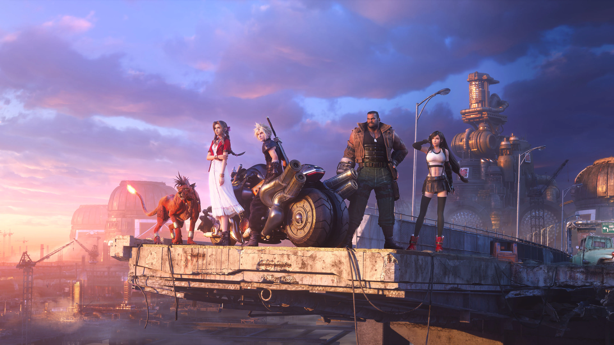
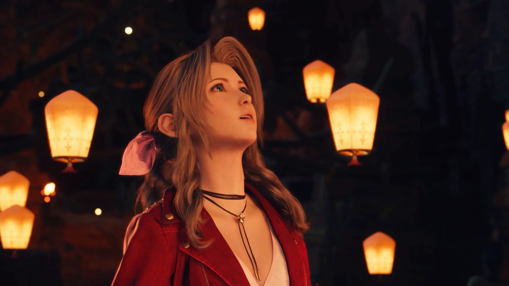

Jogos
Diretor de Final Fantasy 7 Rebirth acredita que a Parte 3 será um dos melhores jogos de todos os tempos.

O diretor de Final Fantasy 7 Rebirth, Naoki Hamaguchi, acredita que a Parte 3 será um dos melhores jogos já feitos. Hamaguchi fez esses comentários durante uma apresentação ao vivo chamada ‘Final Fantasy VII Rebirth Summoning A Masterpiece’, onde se juntou ao produtor Yoshinori Kitase para falar principalmente sobre a criação de Final Fantasy 7 Rebirth. Em certo ponto, a conversa se voltou para o futuro da trilogia, e tanto Hamaguchi quanto Kitase aproveitaram a oportunidade para animar os fãs.
“Quando penso no terceiro e último jogo da trilogia Remake, realmente fico muito animado e tenho grandes expectativas em relação a ele”, disse Kitase. “Realmente espero que os fãs tenham grandes expectativas em relação a este jogo, e vamos atender a essas expectativas. Com certeza, vamos expandir e tornar o mundo de Final Fantasy 7 ainda maior do que é agora.”
Kitase disse que o feedback dos fãs dos dois primeiros jogos será “refletido no terceiro jogo” e prometeu que “será exatamente o que os fãs estão procurando”. Ele também descreveu o terceiro jogo como uma “sinergia” de “nostalgia e nova inovação”.
Ainda não temos nada próximo a uma data de lançamento, e o terceiro jogo da trilogia provavelmente ainda levará anos para ser lançado, mas Hamaguchi disse recentemente que a Square Enix está considerando mover seu desenvolvimento para o Unreal Engine 5, se for convencido de que isso aceleraria o processo.
“A equipe de desenvolvimento está trabalhando duro neste momento, e vamos fazer com que o jogo supere todas as expectativas que você tem em relação ao jogo”, disse Hamaguchi. “Estou absolutamente confiante de que o terceiro jogo na série Final Fantasy 7 Remake será um dos jogos mais amados e populares de toda a história dos videogames, mais uma vez.”
Final Fantasy 7 Remake e Rebirth: aclamação universal confirma a grandeza de um clássico, mas o desfecho ainda precisa unir um mundo mais complexo do que nunca.
Se fosse quase qualquer outro jogo e equipe de desenvolvimento, eu chamaria isso de pura arrogância, mas o Final Fantasy 7 original é amplamente considerado um dos jogos mais amados e influentes de todos os tempos. Remake e Rebirth foram recebidos com aclamação universal de críticos e jogadores, e nada significativo mudou na equipe de desenvolvimento nos níveis mais altos.
Claro, só o tempo dirá se as palavras de Hamaguchi se provarão proféticas. A estrutura para um lançamento geracional já está lá graças ao jogo original e às duas entradas na série de remakes, mas o estúdio ainda precisa acertar o final, unindo todas as pontas soltas em uma história e mundo que se tornaram muito mais complexos do que o jogo original de 27 anos atrás.